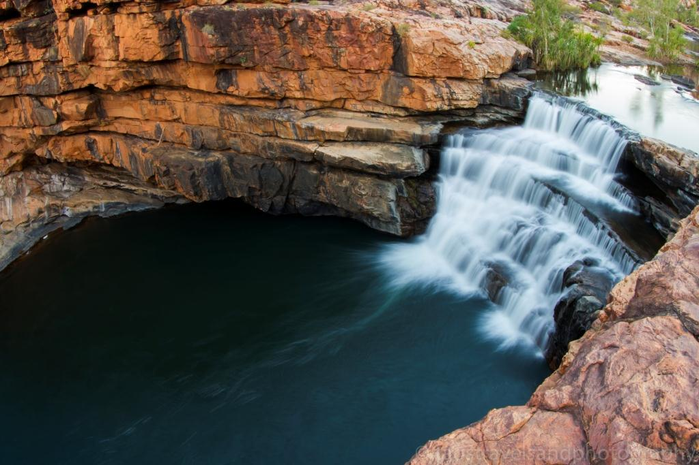
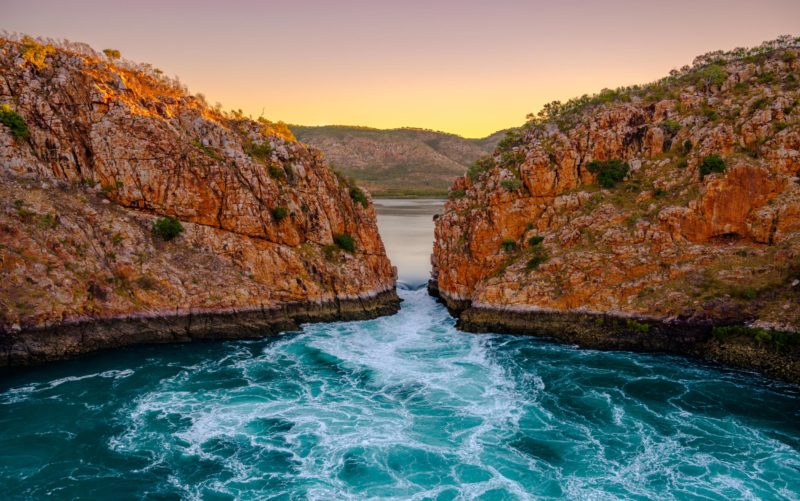
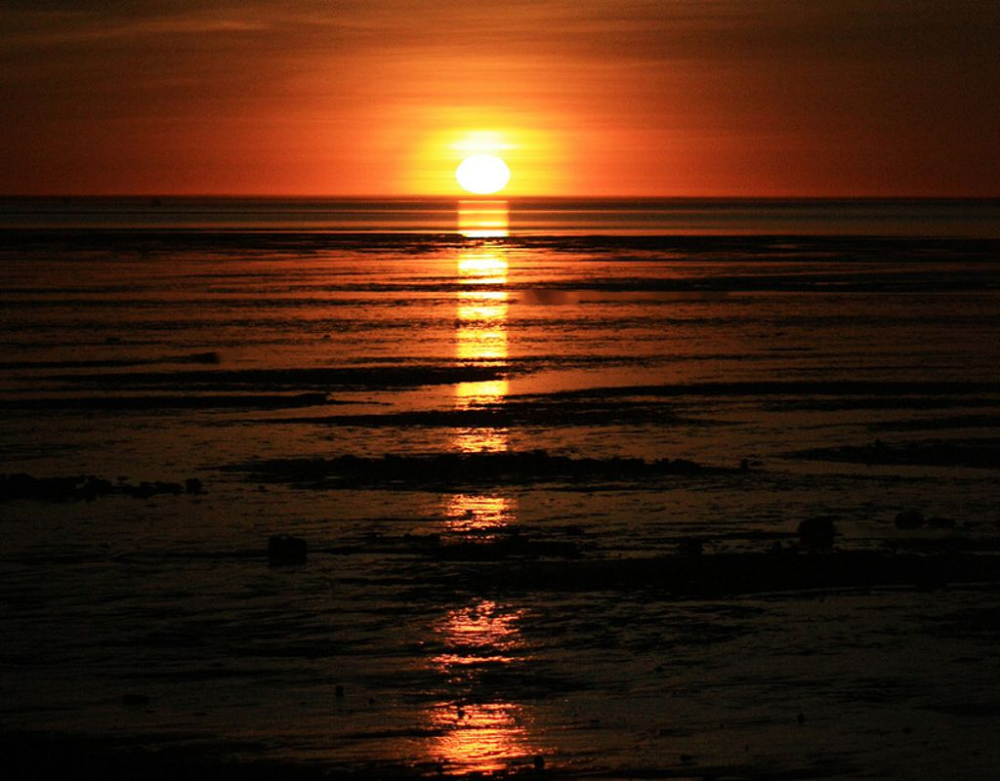
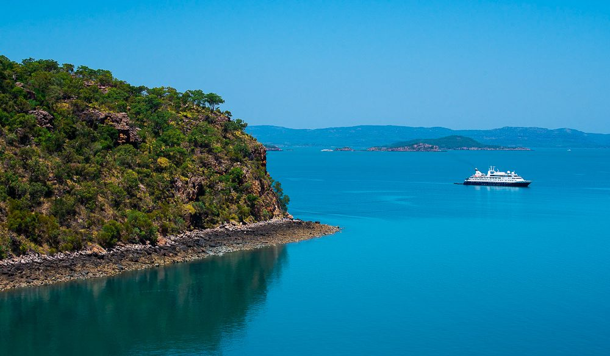

Broome and the Kimberley Region
An ancient landscape covering hundreds of thousands of square kilometres, the Kimberley is one of the world's most precious wilderness regions.
Three times larger than England and with a population of less than 40,000, the Kimberley region – spread over Australia's entire north-western corner – is one of the world's last wilderness frontiers. Here you'll find prolific wildlife, majestic canyons, freshwater swimming holes and several outback stations, as well as one of Australia's greatest 4WD road trips. Despite the area's remoteness, it's also a place of great food, luxury accommodation, friendly locals and one of the most romantic beach towns on Earth.
Things to do and top attractions in the Kimberley
- Enjoy Broome's many delights
- Cruise the Kimberley coastline
- Take a road trip on 'the Gibb'
- Stay at spectacular El Questro
- See the Bungle Bungles
- Escape to a remote luxury lodge
- Help cultivate pearls in Cygnet Bay
- Explore Aboriginal culture
Other Images
|  |  |
 |  |  |